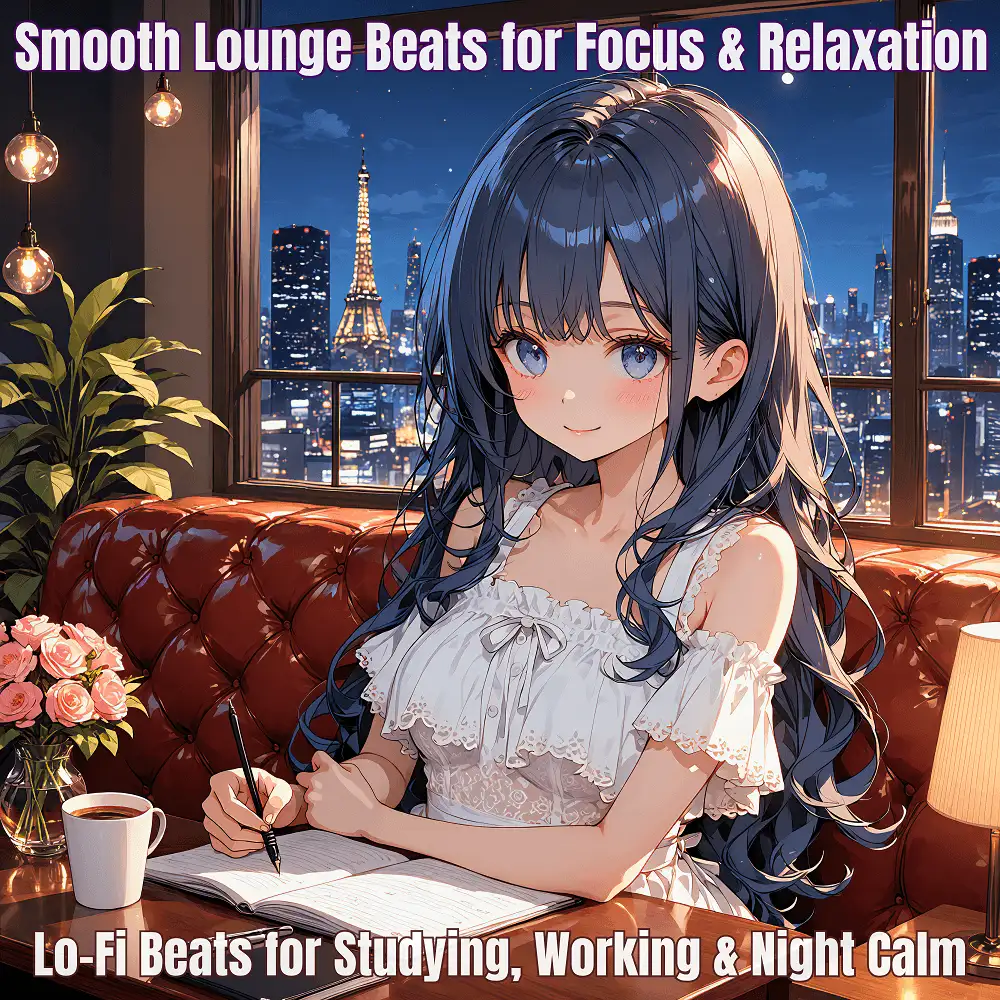

Chillout · Lo-Fi
Night Lounge: Chillout Beats for Study & Relaxation
Nanashino-chan
Nanashino-chanの「Night Lounge: Chillout Beats for Study & Relaxation」。Chillout / Lo-Fiを楽しめる全22曲のインストゥルメンタル作品です。「Urban Elegance / Velvet Nights」などを収録。気になる曲を試聴して、配信サービスでお気に入りを見つけてください。
2025-05-24 リリース · 22 曲 · Instrumental
アルバムを試聴
気になる音楽を、ここから。
曲を選ぶまでジャケットを表示します。試聴にはYouTubeを使用します。
YOUTUBE PREVIEW
試聴する曲を選んでください
曲を選ぶまでジャケットを表示します。試聴にはYouTubeを使用します。
再生できない場合は、配信サービスでアルバムや曲を開いてください。
配信サービスでアルバムを探す
「検索」のリンクは検索結果を開きます。サービス内でアルバムや曲を選択してください。
収録曲一覧 22
- 01Urban Elegance
- 02Velvet Nights
- 03Smooth Espresso
- 04Stylish Sway
- 05Chic Silence
- 06Gentle Groove
- 07Lounge Lights
- 08Midnight Glow
- 09Sleek Streets
- 10Timeless Charm
- 11Sapphire Dreams
- 12Café Conversations
- 13Elegant Echoes
- 14Downtown Breeze
- 15Nightfall Serenity
- 16Hidden Gem
- 17Sculpted Rhythm
- 18Velvet Skyline
- 19Reflective Moments
- 20City Lights
- 21Moonlit Lounge
- 22Chic Reverie
SNSで使いたい音源を探す
「Nanashino-chan ＋ 曲名」をコピーして、SNSアプリの音源検索に貼り付けてください。音源の表示は地域やアカウントにより異なります。コピー機能は利用許諾を付与するものではありません。